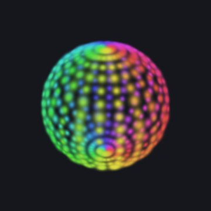
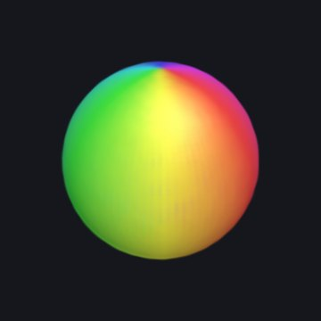
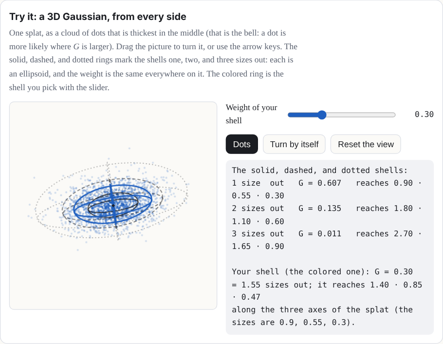
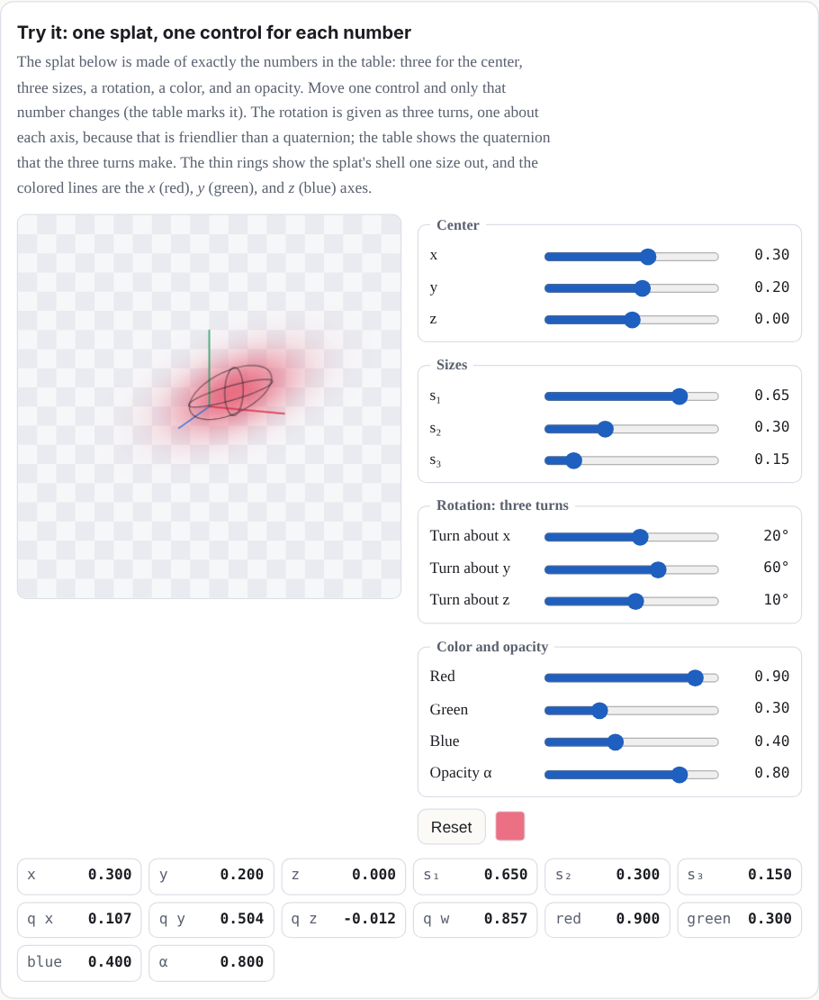
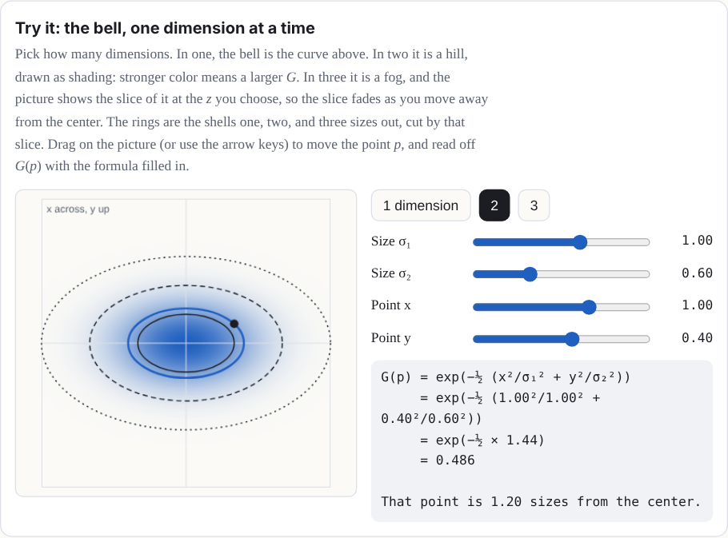
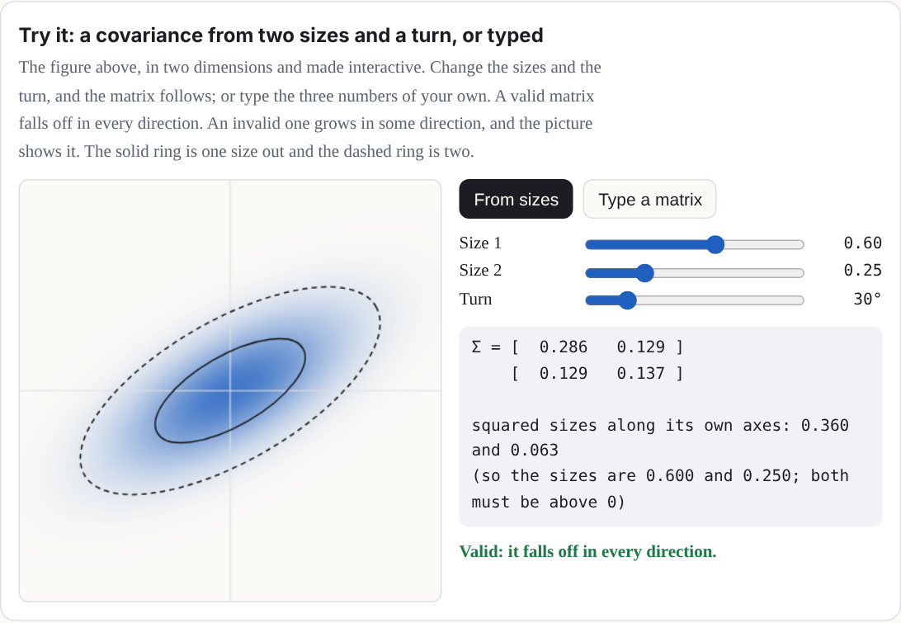
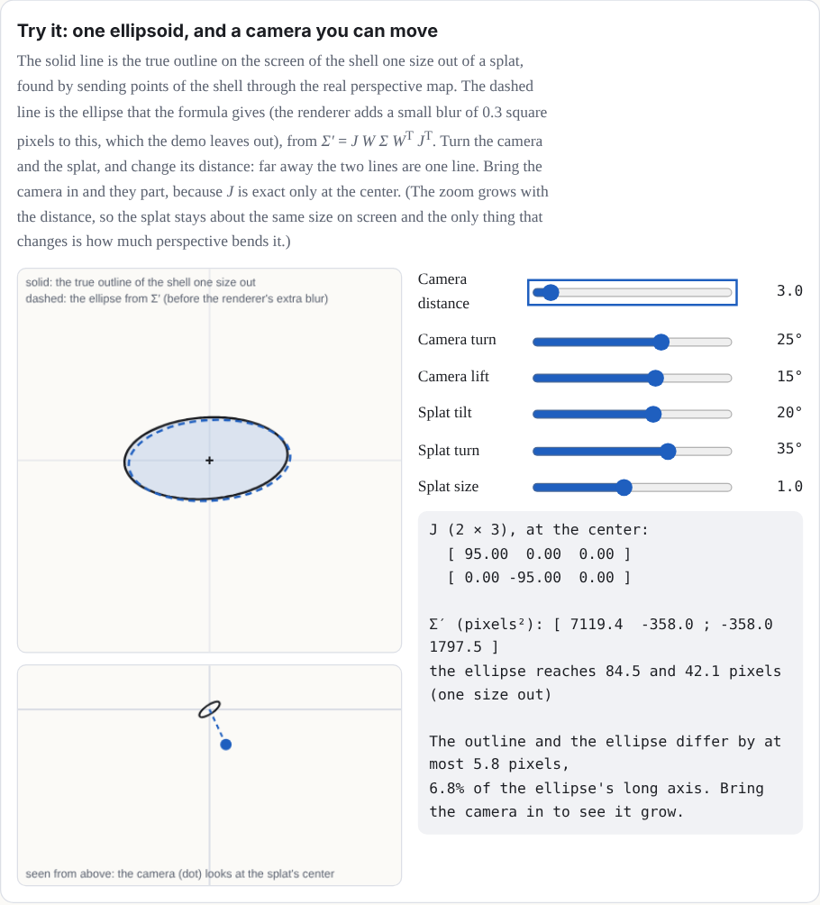
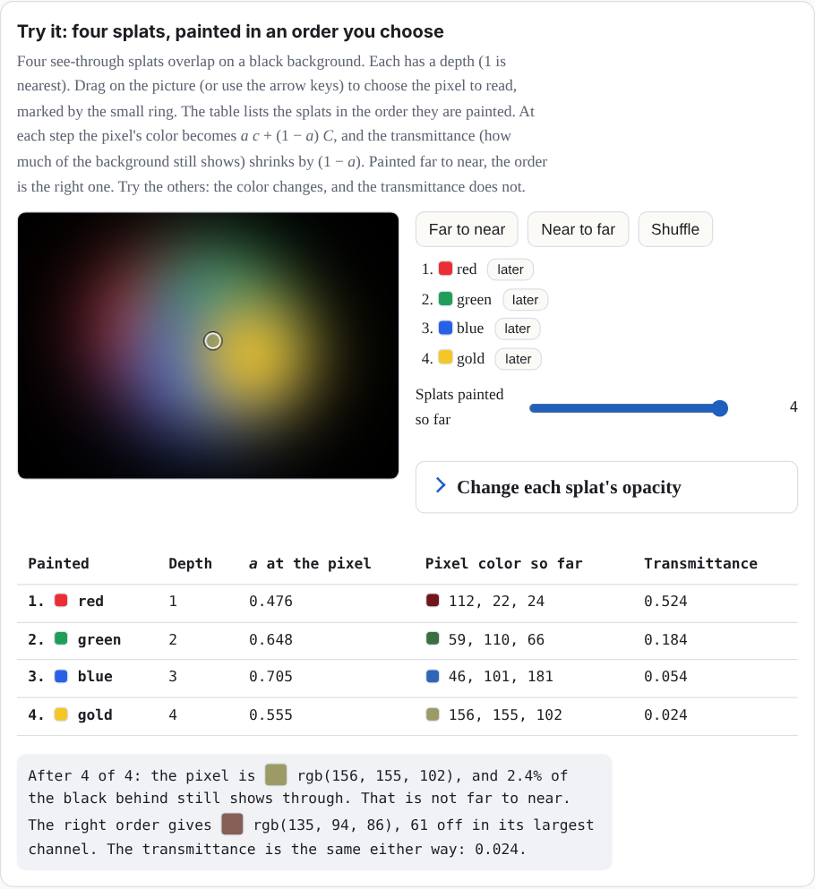

Definitions, derivations, notes, and long tables start folded.
Chapter 1What a splat is
A splat is a small cloud of color floating in space. Up close, it looks like a soft ellipse, bright in the middle and fading at the edges. On its own, it is nothing much. Put thousands side by side, however, and they melt into surfaces: a torus, a seashell, a cat – practically any object imaginable can be built from splats!
100 splats

400 splats

6,000 splats
What is a 3D Gaussian?
Think of a smooth weight field centered at a point μ. Three positive widths and a rotation shape it: the places where the weight is equal form nested ellipsoids. The weight G is 1 at the center and falls off with distance measured in units of those widths. To draw one, the renderer flattens the field into an elliptical patch on the screen, gives it a color, and blends its opacity over the patches behind it. A splat is neither a surface of triangles nor a rigid little ball. Here G peaks at 1, so it is a weight, not a probability density (which would be scaled to add up to 1).
Two terms: weight field and positive widths
A weight field is a number at every point in space: 1 at the center, and falling off the farther you go. The three positive widths are the splat's sizes along its own three axes. They must be above zero, because a width of zero would make the formula below divide by zero.
Three ways splats come to exist (Figure 1). Do not mix them up:
- A recipe's placed splats. A toy's recipe places them by rule: points sampled on the shapes of the kit (Splashery's toy-building library, Level 2), each given a size, a rotation, and a color. Nothing is fitted to photos.
-
A trained capture. A splat file made by other software from many photos of a real
thing, then opened here (
.ply,.sog,.splat, or.spz). The page shows these; it does not train them. - The one-photo teaching fit. The Gaussian splatting toy fits flat, 2D Gaussians to a single picture by gradient descent. It shows the fitting idea; it is not a 3D reconstruction.
Try it: a 3D Gaussian, from every side
One splat, as a cloud of dots that is thickest in the middle (that is the bell: a dot is more likely where G is larger). Drag the picture to turn it, or use the arrow keys. The solid, dashed, and dotted rings mark the shells one, two, and three sizes out: each is an ellipsoid, and the weight is the same everywhere on it. The colored ring is the shell you pick with the slider.

The numbers in one splat
Each splat is described by a handful of numbers:
| Part | Numbers | What it means |
|---|---|---|
| Center μ | 3: x, y, z | Where the middle of the splat is. |
| Sizes s | 3: s1, s2, s3 | How far it spreads along each of its own three axes. Equal sizes make a ball; one small size makes a flat disc. |
| Rotation q | 4 (a quaternion) | Which way those three axes point. |
| Color | 3: red, green, blue | Each from 0 to 1. |
| Opacity α | 1 | How solid its middle is, from 0 (clear) to 1 (solid). |
Try it: one splat, one control for each number
The splat below is made of exactly the numbers in the table: three for the center, three sizes, a rotation, a color, and an opacity. Move one control and only that number changes (the table marks it). The rotation is given as three turns, one about each axis, because that is friendlier than a quaternion; the table shows the quaternion that the three turns make. The thin rings show the splat's shell one size out, and the colored lines are the x (red), y (green), and z (blue) axes.

That is 14 numbers per splat. A kit toy starts with a budget of 60,000 splats at the Low tier, 140,000 at Mid, 200,000 at High, and 280,000 at Max. Recipes can raise that budget, up to 400,000 at Max. Auto picks Low, Mid, or High; Max is a viewer choice. Many splat files also let a splat's color change a little with the direction you look from; the toys you build here use one color per splat.
Why these numbers? The splat budgets, and what Auto does
Our choice Nothing in the splat file format or the browser sets these four numbers.
Each tier is a splat count that a device of that class can draw smoothly. Auto reads the device to pick one: Low for 2 GB of memory or less, or two cores or fewer; Mid for a touch-screen device whose shorter side is under 820 pixels, or 4 GB of memory or less, or four cores or fewer; High for the rest. It never picks Max. That is a choice you make in Detail, along with High. Auto also steps down while you play: when frames take longer than about 24 milliseconds, it first lowers the screen resolution, and if frames at the lowest resolution still average over 40 milliseconds for 30 frames in a row, it drops one tier. The project's notes call the tier thresholds and the 24 and 40 millisecond limits "guesses, not tuned on real phones".
What the measurements say. The Sharpness lane (September 29, 2026) measured 14 toys on a 390 by 844 phone in a software renderer. A budget of 200,000 splats instead of 140,000 made no toy sharper, and several shimmered more (the penguin's shimmer went from 2.72 to 3.90), because each splat got smaller. Lifting the cap on the screen's pixel ratio was the real lever: edges came out about a third narrower, and speckle fell by 10 to 60 percent. More splats help a toy's shape, not its grain.
Show the table: what a bigger budget did
| Toy (home view) | Today: 140,000 splats, 2x phone | High tier: 200,000 splats | 3x phone, pixel-ratio cap lifted |
|---|---|---|---|
| Lamp | 0.75 · 0.42 · 1.95 | 0.72 · 0.45 · 2.03 | 0.52 · 0.37 · 1.57 |
| Penguin | 0.72 · 0.53 · 2.72 | 0.73 · 0.56 · 3.90 | 0.50 · 0.40 · 2.08 |
| Klein bottle | 0.84 · 1.19 · 1.42 | 0.81 · 1.00 · 1.75 | 0.53 · 0.77 · 1.13 |
| Marble | 0.81 · 0.69 · 1.13 | 0.78 · 0.83 · 1.41 | 0.55 · 0.48 · 0.87 |
| White blood cell | 0.77 · 1.28 · 1.64 | 0.77 · 1.39 · 1.02 | 0.54 · 0.75 · 1.15 |
| Chladni plate | 0.96 · 3.85 · 9.59 | 0.98 · 5.51 · 10.75 | 0.75 · 1.48 · 5.39 |
Each cell is edge · speckle · shimmer, and lower is better for all three. Edge is how
many screen pixels an edge takes to go from 10 to 90 percent; speckle is the noise over
flat areas; shimmer is how much fine detail flickers frame to frame. Six of the 14 toys
measured; the rest are in docs/lab/SHARPNESS.md.
What it did not test. One pair of budgets (140,000 and 200,000), one phone size, one renderer (software, not a real phone's graphics chip), and the toys as they were on that day, before later changes. The Kit lab's larger sweep is in Level 2, under How many splats?.
If it were chosen differently. A bigger budget costs memory and drawing time on a
weak device. A smaller one makes shapes coarser. With labs on, a Detail slider now sets
the count directly, from 60,000 to 400,000, beside the tiers
(docs/lab/DETAIL-SLIDER.md); the tiers themselves have not changed.
Where it lives: PROFILES in src/generators.js;
detectProfile in src/player.js; timeFrame in
src/stage.js; the measurements in docs/lab/SHARPNESS.md.
Why this number? One color per splat
Our choice A captured file can carry more; the kit does not.
A captured file can store how each splat's color changes with the direction you look from (spherical harmonics), because training sees every splat from many angles. A kit splat is placed by a recipe, so there are no photos to learn that change from. The kit keeps one color per splat, and the harmonics of a trained file are dropped when it is used as a kit part.
If it were chosen differently. A recipe can already fake two such looks:
glint brightens a splat as the camera moves, and rim changes
glass's opacity with the view. A real shine that moves with the view now exists as a labs
experiment, on only when a link or the address asks for it with labs on
(docs/lab/GLOSS.md). It uses the kit's own data and shader, with no change to
the engine. Real-phone checks are still open.
Where it lives: src/packs/fidelity.js (its opening comment),
src/kit.js, and the effect list in src/effects.js.
The Gaussian: a bell in three dimensions
The "Gaussian" in Gaussian splat is the bell curve, named after the mathematician Carl Friedrich Gauss. In one data dimension, a bell centered at μ with width σ (sigma, the standard deviation) is
G(x) = exp(−(x − μ)² / 2σ²)
The data here are one-dimensional: one number, x, goes in, and one number, G, comes out. The drawing below needs two dimensions to show them, one for x and one for G.
In three dimensions, the width becomes a 3-by-3 matrix Σ (capital sigma), called the covariance [4], and the squared distance becomes a quadratic form. For a point p in space, the splat's strength there is
G(p) = exp(−½ (p − μ)T Σ−1 (p − μ))
Where G is the same value, you are on the same "shell" around the center, and those shells are ellipsoids: stretched and turned spheres.
Try it: the bell, one dimension at a time
Pick how many dimensions. In one, the bell is the curve above. In two it is a hill, drawn as shading: stronger color means a larger G. In three it is a fog, and the picture shows the slice of it at the z you choose, so the slice fades as you move away from the center. The rings are the shells one, two, and three sizes out, cut by that slice. Drag on the picture (or use the arrow keys) to move the point p, and read off G(p) with the formula filled in.

Two words in that formula: the inverse and the quadratic form
The inverse Σ−1 is the matrix that undoes Σ. And a quadratic form is an expression where every term has two factors of the input, like ad1² + 2bd1d2 + cd2². In two dimensions, with d = (d1, d2) = p − μ, and Σ−1 with 4 and 1 on its diagonal (and zeros elsewhere), the form dT Σ−1 d is 4d1² + d2². Setting it equal to 1 draws an ellipse that reaches ½ along the first axis and 1 along the second. A quadratic form is what turns a point's offset from the center into one number for how far out it is, measured in the splat's own widths. In three dimensions, the same idea draws an ellipsoid [5].
Approximation: the drawn bell is finite. The ideal G never reaches zero. The site's renderer cuts each splat off where G has fallen to e−4, about 0.02 (a little under 3 sizes out), and rescales the falloff so it reaches exactly 0 there. A labs-only setting can swap in a sharper falloff for one toy. So the equations here describe the ideal splat, and the screen shows a close, cut-off copy of it.
The covariance, built from sizes and a rotation
Not every 3-by-3 matrix is a valid covariance. It has to be symmetric, and it has to be positive definite (the bell must fall off in every direction). Instead of picking its nine numbers directly, a splat builds it from its three sizes and its rotation:
Σ = R S ST RT, where S = s1000s2000s3
and R is the rotation matrix of the quaternion q. Read it right to left, as a recipe for a shape: start with a round ball of size 1, stretch it by s1, s2, and s3 along x, y, and z, then turn it by R. Any sizes above zero and any rotation give a valid covariance, which is exactly what you want when a computer is nudging millions of numbers.
Try it: a covariance from two sizes and a turn, or typed
The figure above, in two dimensions and made interactive. Change the sizes and the turn, and the matrix follows; or type the three numbers of your own. A valid matrix falls off in every direction. An invalid one grows in some direction, and the picture shows it. The solid ring is one size out and the dashed ring is two.

A worked example: a covariance from sizes 0.3, 0.1, and 0.1
Take sizes 0.3, 0.1 and 0.1, turned 30° about the z axis. Then SST has 0.09, 0.01, and 0.01 on its diagonal, and multiplying out R SST RT gives
Σ ≈ 0.0700.03500.0350.0300000.010
The top-left number is 0.09 cos²30° + 0.01 sin²30° = 0.07, and the ones beside it are (0.09 − 0.01) sin 30° cos 30° ≈ 0.035. Those off-diagonal numbers are the tilt: they are zero when the splat's axes line up with x, y, and z, and usually not zero when they do not. (Usually, because a splat that is round in a plane has no preferred axes there, so turning it within that plane changes nothing.) (In this manual, rotation means a splat's own turn, and "Tilt lock" is the name of the camera control in Level 5.)
From 3D to the screen
To draw a splat, the renderer works out what its bell looks like from the camera. It first turns the covariance into the camera's view, with the camera's rotation W. The perspective of a camera is not a straight-line map, but close to one point it nearly is, and its best straight-line stand-in there is a matrix J (the Jacobian of the projection). Such a stand-in is called affine: a straight-line map plus a shift [6]. Then the splat's covariance on the screen is
Σ′ = J W Σ WT JT
keeping only its top-left 2-by-2 block. That 2-by-2 matrix is a flat bell on the screen: an ellipse. Its eigenvectors are the directions of the ellipse's axes, and the square roots of its eigenvalues are how far it spreads along them. This trick comes from EWA splatting (Zwicker, Pfister, van Baar, and Gross, 2001) [2].
That is the first-order footprint, and a real renderer draws a little more than it. To keep
a tiny splat from shrinking to less than a pixel (and flickering), splat renderers add a
small blur on the screen: the original 3D Gaussian splatting code adds 0.3 square pixels to
each diagonal entry of the 2-by-2 matrix, and so does Splashery's renderer, which is
PlayCanvas's. In its vendored shader that blur is always on: it adds 0.3 to both diagonal
entries, and it keeps the smaller eigenvalue at least 0.1. It also skips splats that come
out under about 2 pixels on the screen (the cull settings in
src/sharpness.js explain how). A separate, optional setting, the engine's
anti-aliasing (off unless a labs switch turns it on), does something else: it lowers each
splat's opacity to make up for the energy that blur spread out, using the ratio of the
determinants before and after. So the demo below shows Σ′ itself, the unfiltered geometry;
the pixels on your screen have that extra blur on top, whichever way the option is set.
Try it: one ellipsoid, and a camera you can move
The solid line is the true outline on the screen of the shell one size out of a splat, found by sending points of the shell through the real perspective map. The dashed line is the ellipse that the formula gives (the renderer adds a small blur of 0.3 square pixels to this, which the demo leaves out), from Σ′ = J W Σ WT JT. Turn the camera and the splat, and change its distance: far away the two lines are one line. Bring the camera in and they part, because J is exact only at the center. (The zoom grows with the distance, so the splat stays about the same size on screen and the only thing that changes is how much perspective bends it.)

Approximation: affine around the center. An affine map is a straight-line map plus a shift. J is exact only at the splat's center, where the straight-line stand-in touches the true perspective map. Across the rest of the splat the real map bends away from it, so the ellipse is the first-order answer, not an exact image of the 3D bell.
Sorting and blending, back to front
Splats are see-through at their edges, so the order they are drawn in matters. The splats are sorted by their centers' depth along the camera's view, and painted from the farthest to the nearest. At each pixel, a splat's strength there is its opacity times its bell, a = α G′, and it is laid over what is already there:
C ← a c + (1 − a) C
where c is the splat's color and C the pixel's color so far. Written out for all the splats at once, counting from the nearest (i = 1) to the farthest, the pixel's color over a black background is
C = Σi ci ai Πj < i (1 − aj)
Each splat shows as much as the splats in front of it let through. This "over" operation is from computer graphics' classic paper on compositing [3]. It is how the 2023 paper that started the craze, "3D Gaussian Splatting for Real-Time Radiance Field Rendering" (Kerbl, Kopanas, Leimkühler, and Drettakis) [1], draws its scenes, and it is how Splashery draws every toy.
Try it: four splats, painted in an order you choose
Four see-through splats overlap on a black background. Each has a depth (1 is nearest). Drag on the picture (or use the arrow keys) to choose the pixel to read, marked by the small ring. The table lists the splats in the order they are painted. At each step the pixel's color becomes a c + (1 − a) C, and the transmittance (how much of the background still shows) shrinks by (1 − a). Painted far to near, the order is the right one. Try the others: the color changes, and the transmittance does not.
Change each splat's opacity
| Painted | Depth | a at the pixel | Pixel color so far | Transmittance |
|---|

Why the order matters in the toys. By default, Splashery sorts the splats in the
pose a toy was built in, so a piece that moves keeps the order it had at rest. A recipe
can request out.resortPose to sort moving parts and pages in their current
pose. Turn a solid thing more than a quarter turn and its far side can be drawn over its
near side. The toys work around it: the Splat equation toy, for one, builds its shape at
twelve moments and morphs from the copy at the start of the current interval to the next
(Level 3).
A worked example of blending, with a background
Take one color channel. The background is 0.2. The far splat (drawn first) has color 0.9 and strength a = 0.5 at this pixel. The near splat (drawn second) has color 0.1 and a = 0.4. After the far splat: C = 0.5 × 0.9 + 0.5 × 0.2 = 0.55. After the near one: C = 0.4 × 0.1 + 0.6 × 0.55 = 0.37. The same number comes from the sum above with the background added: 0.1 × 0.4 + 0.9 × 0.5 × 0.6 + 0.2 × 0.6 × 0.5 = 0.37. The share of the background that still shows, the transmittance, is 0.6 × 0.5 = 0.3.
One caution about the numbers. 0.37 is the arithmetic of one channel in one consistent blending space: the formula does not care what the 0 to 1 numbers mean, as long as every number in the sum uses the same meaning. A screen's red, green, and blue numbers are usually encoded (squeezed so that dark shades get more steps), and blending encoded numbers is not the same as blending the light itself. So read 0.37 as the result of the sum, not as a measured amount of light and not as the final pixel on any particular screen.
Approximation: sorting uses centers. Each splat gets one depth, the depth of its center, so the order is per splat, not per pixel. Two big splats that overlap in depth can be drawn in the wrong order where they cross. This is why recipe authors keep layers apart (the recipe guide says splats "sort by their centers, so closer layers mix in stripes").